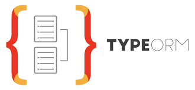

TypeORM¶

Overview¶
Theo official documentation của TypeORM định nghĩa:
TypeORM is an ORM that can run in NodeJS, Browser, Cordova, PhoneGap, Ionic, React Native, NativeScript, Expo, and Electron platforms and can be used with TypeScript and JavaScript (ES5, ES6, ES7, ES8).
TypeORM là một ORM có thể chạy trên các nền tảng NodeJS, Browser, Cordova, PhoneGap, Ionic, React Native, NativeScript, Expo và Electron và còn dùng được với TypeScript và JavaScript (ES5, ES6, ES7, ES8)
TypeORM ra đời nhằm hỗ trợ các tính năng JavaScript mới nhất, và cung cấp các tính năng bổ sung giúp người dùng phát triển ứng dụng tích hợp cơ sở dữ liệu – từ các ứng dụng nhỏ với chỉ vài table đến các ứng dụng doanh nghiệp quy mô lớn.
Một số lợi ích chính của việc sử dụng TypeORM bao gồm:
-
TypeORM hỗ trợ cả
Active Record patternvàData Mapper pattern, khác với tất cả các ORM JavaScript hiện có, với TypeORM có thể viết các ứng dụnghigh quality,loosely coupled,scalablevàmaintainablerất hiệu quả. -
TypeORM kế thừa mạnh mẽ từ các ORMs khác, bao gồm Hibernate, Doctrine và Entity Framework.
-
Tăng tốc độ phát triển bằng cách loại bỏ việc sử dụng lặp đi lặp lại mã SQL
-
Giảm thời gian phát triển rất nhiều
-
ORM vượt qua tất cả sự khác biệt giữa các Database Driver vì nó có cách chuyển đổi code sang mã SQL của từng Database Driver khác nhau.
-
Có thể được sử dụng với cả Relational Database như mysql, oracle, postgresql, maria db và nosql như mongodb
-
ORM tóm tắt những thứ như bộ nhớ đệm và lập index
-
Nó có thể
catchcácgeneral issueschẳng hạn input validations
Features¶
Một vài basic features của typeORM có thể liệt kê ra như sau: - entities and columns - database-specific column types - entity manager - repositories and custom repositories - clean object relational model - associations (relations) - eager and lazy relations - uni-directional, bi-directional and self-referenced relations - supports multiple inheritance patterns - cascades - indices - transactions - migrations and automatic migrations generation - connection pooling - replication - using multiple database connections
Xem chi tiết tại: Official documentation
Installation and Connection¶
Installation¶
Ta có thể install TypeORM từ npm registry:
optional modules là reflect-metadata và @types/node như sau:
Cài typeORM rồi cũng cần cài database driver để thực hiện Connection. Ví dụ với MySQL hoặc MariaDB
Ngoài ra, TypeORM còn hỗ trợ Connection tới các Database Driver sau: PostgreSQL/CockroachDB, SQLite, Microsoft SQL Server, sql.js, Oracle, SAP Hana, MongoDB, NativeScript/react-native/Cordova.
Connection¶
Sau khi có typeORM và database driver của mình, thực hiện một Connection từ typeORM tới database driver bằng cách dùng createConnection() (ko có s) method như sau:
import { createConnection } from "typeorm";
const connection = await createConnection({
type: "mysql",
host: "localhost",
port: 3306,
username: "admin",
password: "12345",
database: "blog-world"
});
Chúng ta có thể kết nối tới nhiều cơ sở dữ liệu bằng cách sử dụng phương thức createConnections() (có s) truyền vào một mảng chứa các database driver connections.
import {createConnections, Connection} from "typeorm";
const connections = await createConnections([{
name: "default",
type: "mysql",
host: "localhost",
port: 3306,
username: "test",
password: "test",
database: "test"
}, {
name: "test2-connection",
type: "mysql",
host: "localhost",
port: 3306,
username: "test",
password: "test",
database: "test2"
}]);
Còn một cách khác nữa để kết nối với cơ sở dữ liệu là sử dụng ormconfig file trong đó chứa các prperties - object key value sẽ được lưu trữ dưới dạng định ormconfig.json/ormconfig.js/ ormconfig.yml/ormconfig.env/ormconfig.xml và exported ra khi cần thiết.
Entity - Column - Primary key¶
Entity¶
Entity là một class thể hiện cho một table trong database/document. Còn tất cả properties của entity này sẽ được converted thành columns của table trong database/document. Entity hỗ trợ tất cả basic types trong database như number, string, boolean, array v.vvv. Một Entity - gọi là writer entity trong blog-world database sẽ được typeORM định nghĩa như thế này:
import {Entity, PrimaryGeneratedColumn, Column} from "typeorm";
@Entity()
export class Writer {
@PrimaryGeneratedColumn()
id: number;
@Column()
name: string;
@Column()
phone: string;
@Column()
isFeatured: boolean;
}
Với mỗi property có cái tag là @Column sẽ đại diện cho 1 column trong database table. Về phần cú pháp @Entity() hay @Column() là Decorator, sẽ nói ký hơn ở module Decorator-Anotation .
Column¶
Có thể có nhiều loại columns khác nhau dựa trên bản chất của nó. Và một model phải có
Có vài sự khác biệt giữa types of columns dựa trên nguyên bản của nó. Một model phải có Primary Column để đại diện cho Primary Keys trong Database. Nếu nó được generate tự động thì @PrimaryGeneratedColumn cần sử dụng để biết đâu là Primary Column của một Entity. Với cách làm này, ta có thể dùng uuid như sau: @PrimaryGeneratedColumn("uuid") để generate unique id everytime, khi đó id sẽ mặc đi là string type.
Ngoài ra, trong typeORM còn hỗ trợ Decorate cho các Column khác như @CreateDateColumn - tự động insert Date type và một Column trong Entity hay ta có thể sử dụng enum làm type of a column như ví dụ bên dưới.
export enum Gender {
MALE = "male",
FEMALE = "female",
OTHER = "other"
}
@Entity
export class Writer {
// other properties will remain same
@Column({
type: "enum",
enum: Gender
})
gender: Gender;
}
Dựa trên các cơ sở dữ liệu khác nhau sẽ có cách sử dụng Spatial Columns khác nhau.
Relations¶
Để thêm reference của một entity vào một entity khác, ta cần sử dụng relations. Relations có 4 kiểu: one-to-one, one-to-many, many-to-one và many-to-many → tương ứng trong typeORM là @OneToOne, @OneToMany, @ManyToOne and @ManyToMany. Các Relations này sẽ cụ thể hơn từng Relationship trong module Relations-Cascade. Dưới đây là một ví dụ implementation with code:
import {Entity, PrimaryGeneratedColumn, Column} from "typeorm";
@Entity()
export class Avatar {
@PrimaryGeneratedColumn()
id: number;
@Column()
url: string;
@Column()
text: string;
}
Avatar entity. Sau đó là Writer entity:
import {Entity, OneToOne, JoinColumn} from "typeorm";
import {Avatar} from "./Avatar";
@Entity
export class Writer {
// other properties will remain same
@OneToOne(() => Avatar)
@JoinColumn()
avatar: Avatar;
}
Ở đây mỗi Writer sẽ có một Avatar duy nhất, đại diện bởi mối quan hệ 1-1 - @OneToOne.
Để thiết lập quan hệ 1-N và N-1, ta sẽ tạo một entity mới tên là Blog. Một Writer có thể có nhiều Blog nhưng một Blog sẽ chỉ được viết bởi một Writer.
import {Entity, PrimaryGeneratedColumn, Column, ManyToOne} from "typeorm";
import {Writer} from "./Writer";
@Entity()
export class Blog {
@PrimaryGeneratedColumn()
id: number;
@Column()
title: string;
@Column()
cover: string;
@Column()
content: string;
@ManyToOne(() => Writer, writer => writer.blogs)
writer: Writer;
}
Giờ ta update lại Writer entity follows theo one-to-many relation để thể hiện relationship giữa Writer và Blog:
import {Entity, OneToMany} from "typeorm";
import {Blog} from "./Blog";
@Entity
export class Writer {
// other properties will remain same
@OneToMany(() => Blog, blog => blog.writer)
blogs: Blog[];
}
Ta còn mối quan hệ N-N chưa implement. @ManyToMany này có thể được thiết lập bằng cách thêm một entity khác tên là Category. Một Blog có thể có nhiều Category và một Category cũng có thể được gán cho nhiều Blog:
import {Entity, PrimaryGeneratedColumn, Column} from "typeorm";
@Entity()
export class Category {
@PrimaryGeneratedColumn()
id: number;
@Column()
name: string;
}
Writer:
import {Entity, ManyToMany, JoinTable} from "typeorm";
import {Category} from "./Category";
@Entity
export class Writer {
// other properties will remain same
@ManyToMany(() => Category)
@JoinTable()
categories: Category[];
}
@JoinTable() là bắt buộc với @ManyToMany() relations và được Decorate ngay bên dưới.
CRUD Operations¶
EntityManager and Repository¶
Trong TypeORM, ta có thể perform CRUD operations sử dụng EntityManager, Repository và Query Builder.
EntityManager và Repository khá giống nhau về mặt cú pháp khi thực hiện các operations cần thiết. Sự khác biệt là Entity Manager sẽ quản lý tất cả các Entity, trong khi đó Repository sẽ handles một Entity duy nhất, có nghĩa là khi sử dụng Entity Manager, chúng ta cần chỉ định rõ Entity mà ta đang làm việc với mỗi lệnh gọi method. Quay lại ví dụ trên, giả sử ta muốn fetch một Writer với một id có sẵn:
import {getManager} from "typeorm";
import {Writer} from "./entity/Writer";
// using entity manager
const entityManager = getManager();
const writer = await entityManager.findOne(Writer, 1);
// using repository
const writerRepository = getRepository(Writer);
const writer = await writerRepository.findOne(1);
// now lets update writer's name
writer.name = "Zlatan Ibrahimovic";
await entityManager.save(writer);
await writerRepository.save(writer);
Trên đây là một tác vụ đơn giản để performed cho việc lấy dữ liệu từ Database, một số các tác vụ khác như join, insert, update, remove hoạt động phức tạp hơn vẫn có thể được thực hiện bởi EntityManager, Repository.
Còn nói
Query Builder¶
Theo document:
QueryBuilder is one of the most powerful features of TypeORM - it allows you to build SQL queries using elegant and convenient syntax, execute them and get automatically transformed entities.
Với ví dụ trên, ta sẽ thực hiện lệnh truy vấn bằng QueryBuilder như sau:
const firstWriter = await connection
.getRepository(Writer)
.createQueryBuilder("writer")
.where("writer.id = :id", { id: 1 })
.getOne();
Migration, Indices, Transactions, Listeners & Subscribers sẽ đề cập xuyên suốt trong các module sau. Hầu hết tất cả các truy vấn sql cơ bản đều có thể được thực hiện trong TypeORM, tuy nhiên chưa thể là tất cả, vẫn còn nhiều trường hợp các truy vấn rất phức tạp thì có thể sẽ khó khăn trong việc sử dụng TypeORM mà còn mang lại performance không cao.